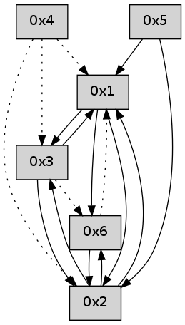

>> << IDX [start] -100 -25 -5 +0 +5 +25 +100 [440.094333172]
 Previous packets
----------------------------------------------------------------------
435.173249 beacon01(adaf) #0 coord=01,02,05,03,04,06 cycle=432.0ms assoc
-- color-indic=0 64 45 f4
435.183210 beacon02(adaf) #0 coord=01,02,05,03,04,06 cycle=432.0ms assoc 64 14 0b
435.193212 beacon05(adaf) #0 coord=01,02,05,03,04,06 cycle=432.0ms assoc 64 b2 21
435.203211 beacon03(adaf) #0 coord=01,02,05,03,04,06 cycle=432.0ms assoc 64 2e 05
435.213212 beacon04(adaf) #0 coord=01,02,05,03,04,06 cycle=432.0ms assoc 64 88 2f
435.223211 beacon06(adaf) #0 coord=01,02,05,03,04,06 cycle=432.0ms assoc 64 fc 33
435.234919 [Hello(4): seq=233 asym=2,6,1,3 sysInfo= stat=2:8,0,0,0/6:0,0,0,0/1:0,0,0,0/3:1,0,0,0]
435.240531 [Hello(1): seq=132 sym=3,2,6 sysInfo= stat=3:1,0,0,0/2:11,0,0,0/6:1,0,0,0]
----------------------------------------------------------------------
435.665357 beacon01(adaf) #0 coord=01,02,05,03,04,06 cycle=432.0ms assoc
-- color-indic=0 64 81 9b
435.675318 beacon02(adaf) #0 coord=01,02,05,03,04,06 cycle=432.0ms assoc 64 d0 64
435.685318 beacon05(adaf) #0 coord=01,02,05,03,04,06 cycle=432.0ms assoc 64 76 4e
435.695320 beacon03(adaf) #0 coord=01,02,05,03,04,06 cycle=432.0ms assoc 64 ea 6a
435.705318 beacon04(adaf) #0 coord=01,02,05,03,04,06 cycle=432.0ms assoc 64 4c 40
435.715319 beacon06(adaf) #0 coord=01,02,05,03,04,06 cycle=432.0ms assoc 64 38 5c
435.726983 [Hello(2): seq=730 sym=6,1,3 sysInfo= stat=6:6,0,0,0/1:6,0,0,0/3:2,0,0,0]
----------------------------------------------------------------------
436.157464 beacon01(adaf) #0 coord=01,02,05,03,04,06 cycle=432.0ms assoc
-- color-indic=0 64 cd 2b
436.167425 beacon02(adaf) #0 coord=01,02,05,03,04,06 cycle=432.0ms assoc 64 9c d4
436.177427 beacon05(adaf) #0 coord=01,02,05,03,04,06 cycle=432.0ms assoc 64 3a fe
436.187426 beacon03(adaf) #0 coord=01,02,05,03,04,06 cycle=432.0ms assoc 64 a6 da
436.197427 beacon04(adaf) #0 coord=01,02,05,03,04,06 cycle=432.0ms assoc 64 00 f0
436.207426 beacon06(adaf) #0 coord=01,02,05,03,04,06 cycle=432.0ms assoc 64 74 ec
436.218851 [Hello(1): seq=133 sym=3,2,6 sysInfo= stat=3:1,0,0,0/2:12,0,0,0/6:1,0,0,0]
436.222794 [Hello(4): seq=234 asym=2,6,1,3 sysInfo= stat=2:9,0,0,0/6:0,0,0,0/1:1,0,0,0/3:1,0,0,0]
436.228176 [Hello(3): seq=234 sym=2,1 asym=6 sysInfo= stat=2:9,0,0,0/1:0,0,0,0/6:0,0,0,0]
----------------------------------------------------------------------
436.649575 beacon01(adaf) #0 coord=01,02,05,03,04,06 cycle=432.0ms assoc
-- color-indic=0 64 09 44
436.659538 beacon02(adaf) #0 coord=01,02,05,03,04,06 cycle=432.0ms assoc 64 58 bb
436.669536 beacon05(adaf) #0 coord=01,02,05,03,04,06 cycle=432.0ms assoc 64 fe 91
436.679536 beacon03(adaf) #0 coord=01,02,05,03,04,06 cycle=432.0ms assoc 64 62 b5
436.689537 beacon04(adaf) #0 coord=01,02,05,03,04,06 cycle=432.0ms assoc 64 c4 9f
436.699537 beacon06(adaf) #0 coord=01,02,05,03,04,06 cycle=432.0ms assoc 64 b0 83
436.711206 [Hello(2): seq=731 sym=6,1,3 sysInfo= stat=6:7,0,0,0/1:7,0,0,0/3:3,0,0,0]
----------------------------------------------------------------------
437.141682 beacon01(adaf) #0 coord=01,02,05,03,04,06 cycle=432.0ms assoc
-- color-indic=0 64 44 43
437.151646 beacon02(adaf) #0 coord=01,02,05,03,04,06 cycle=432.0ms assoc 64 15 bc
437.161644 beacon05(adaf) #0 coord=01,02,05,03,04,06 cycle=432.0ms assoc 64 b3 96
437.171644 beacon03(adaf) #0 coord=01,02,05,03,04,06 cycle=432.0ms assoc 64 2f b2
437.181644 beacon04(adaf) #0 coord=01,02,05,03,04,06 cycle=432.0ms assoc 64 89 98
437.191644 beacon06(adaf) #0 coord=01,02,05,03,04,06 cycle=432.0ms assoc 64 fd 84
437.203361 [Hello(4): seq=235 asym=2,6,1,3 sysInfo= stat=2:10,0,0,0/6:0,0,0,0/1:1,0,0,0/3:2,0,0,0]
437.208335 [Hello(1): seq=134 sym=3,2,6 sysInfo= stat=3:2,0,0,0/2:13,0,0,0/6:2,0,0,0]
----------------------------------------------------------------------
437.633790 beacon01(adaf) #0 coord=01,02,05,03,04,06 cycle=432.0ms assoc
-- color-indic=0 64 80 2c
437.643751 beacon02(adaf) #0 coord=01,02,05,03,04,06 cycle=432.0ms assoc 64 d1 d3
437.653751 beacon05(adaf) #0 coord=01,02,05,03,04,06 cycle=432.0ms assoc 64 77 f9
437.663752 beacon03(adaf) #0 coord=01,02,05,03,04,06 cycle=432.0ms assoc 64 eb dd
437.673752 beacon04(adaf) #0 coord=01,02,05,03,04,06 cycle=432.0ms assoc 64 4d f7
437.683752 beacon06(adaf) #0 coord=01,02,05,03,04,06 cycle=432.0ms assoc 64 39 eb
437.695434 [Hello(2): seq=732 sym=6,1,3 sysInfo= stat=6:7,0,0,0/1:8,0,0,0/3:3,0,0,0]
----------------------------------------------------------------------
438.125898 beacon01(adaf) #0 coord=01,02,05,03,04,06 cycle=432.0ms assoc
-- color-indic=0 64 cc 9c
438.135860 beacon02(adaf) #0 coord=01,02,05,03,04,06 cycle=432.0ms assoc 64 9d 63
438.145861 beacon05(adaf) #0 coord=01,02,05,03,04,06 cycle=432.0ms assoc 64 3b 49
438.155860 beacon03(adaf) #0 coord=01,02,05,03,04,06 cycle=432.0ms assoc 64 a7 6d
438.165860 beacon04(adaf) #0 coord=01,02,05,03,04,06 cycle=432.0ms assoc 64 01 47
438.175861 beacon06(adaf) #0 coord=01,02,05,03,04,06 cycle=432.0ms assoc 64 75 5b
438.187560 [Hello(4): seq=236 asym=2,6,1,3 sysInfo= stat=2:11,0,0,0/6:0,0,0,0/1:2,0,0,0/3:2,0,0,0]
438.190754 [Hello(1): seq=135 sym=3,2,6 sysInfo= stat=3:2,0,0,0/2:14,0,0,0/6:2,0,0,0]
----------------------------------------------------------------------
438.618008 beacon01(adaf) #0 coord=01,02,05,03,04,06 cycle=432.0ms assoc
-- color-indic=0 64 08 f3
438.627968 beacon02(adaf) #0 coord=01,02,05,03,04,06 cycle=432.0ms assoc 64 59 0c
438.637969 beacon05(adaf) #0 coord=01,02,05,03,04,06 cycle=432.0ms assoc 64 ff 26
438.647969 beacon03(adaf) #0 coord=01,02,05,03,04,06 cycle=432.0ms assoc 64 63 02
438.657972 beacon04(adaf) #0 coord=01,02,05,03,04,06 cycle=432.0ms assoc 64 c5 28
438.667970 beacon06(adaf) #0 coord=01,02,05,03,04,06 cycle=432.0ms assoc 64 b1 34
438.679633 [Hello(2): seq=733 sym=6,1,3 sysInfo= stat=6:7,0,0,0/1:9,0,0,0/3:3,0,0,0]
----------------------------------------------------------------------
439.110115 beacon01(adaf) #0 coord=01,02,05,03,04,06 cycle=432.0ms assoc
-- color-indic=0 64 56 92
439.120076 beacon02(adaf) #0 coord=01,02,05,03,04,06 cycle=432.0ms assoc 64 07 6d
439.130076 beacon05(adaf) #0 coord=01,02,05,03,04,06 cycle=432.0ms assoc 64 a1 47
439.140078 beacon03(adaf) #0 coord=01,02,05,03,04,06 cycle=432.0ms assoc 64 3d 63
439.150077 beacon04(adaf) #0 coord=01,02,05,03,04,06 cycle=432.0ms assoc 64 9b 49
439.160077 beacon06(adaf) #0 coord=01,02,05,03,04,06 cycle=432.0ms assoc 64 ef 55
439.171775 [Hello(4): seq=237 asym=2,1,3 sysInfo= stat=2:12,0,0,0/1:3,0,0,0/3:2,0,0,0]
439.174184 [Hello(1): seq=136 sym=3,2,6 sysInfo= stat=3:2,0,0,0/2:15,0,0,0/6:2,0,0,0]
----------------------------------------------------------------------
439.602226 beacon01(adaf) #0 coord=01,02,05,03,04,06 cycle=432.0ms assoc
-- color-indic=0 64 92 fd
439.612188 beacon02(adaf) #0 coord=01,02,05,03,04,06 cycle=432.0ms assoc 64 c3 02
439.622187 beacon05(adaf) #0 coord=01,02,05,03,04,06 cycle=432.0ms assoc 64 65 28
439.632186 beacon03(adaf) #0 coord=01,02,05,03,04,06 cycle=432.0ms assoc 64 f9 0c
439.642187 beacon04(adaf) #0 coord=01,02,05,03,04,06 cycle=432.0ms assoc 64 5f 26
439.652188 beacon06(adaf) #0 coord=01,02,05,03,04,06 cycle=432.0ms assoc 64 2b 3a
439.663866 [Hello(2): seq=734 sym=6,1,3 sysInfo= stat=6:8,0,0,0/1:10,0,0,0/3:3,0,0,0]